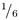
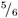

3.1 A Regular Expression Tutorial
Some people, when confronted with a problem, think "I know, I'll use regular expressions." Now they have two problems. 듉amie Zawinski, <alt.religion.emacs> (08/12/1997)
3.1.1 Just What Is a Regular Expression, Anyway?
Many readers will have some background with regular expressions, but some will not have any. Those with experience using regular expressions in other languages (or in Python) can probably skip this tutorial section. But readers new to regular expressions (affectionately called regexes by users) should read this section; even some with experience can benefit from a refresher.
A regular expression is a compact way of describing complex patterns in texts. You can use them to search for patterns and, once found, to modify the patterns in complex ways. They can also be used to launch programmatic actions that depend on patterns.
Jamie Zawinski's tongue-in-cheek comment in the epigram is worth thinking about. Regular expressions are amazingly powerful and deeply expressive. That is the very reason that writing them is just as error-prone as writing any other complex programming code. It is always better to solve a genuinely simple problem in a simple way; when you go beyond simple, think about regular expressions.
A large number of tools other than Python incorporate regular expressions as part of their functionality. Unix-oriented command-line tools like grep, sed, and awk are mostly wrappers for regular expression processing. Many text editors allow search and/or replacement based on regular expressions. Many programming languages, especially other scripting languages such as Perl and TCL, build regular expressions into the heart of the language. Even most command-line shells, such as Bash or the Windows-console, allow restricted regular expressions as part of their command syntax.
There are some variations in regular expression syntax between different tools that use them, but for the most part regular expressions are a "little language" that gets embedded inside bigger languages like Python. The examples in this tutorial section (and the documentation in the rest of the chapter) will focus on Python syntax, but most of this chapter transfers easily to working with other programming languages and tools.
As with most of this book, examples will be illustrated by use of Python interactive shell sessions that readers can type themselves, so that they can play with variations on the examples. However, the re module has little reason to include a function that simply illustrates matches in the shell. Therefore, the availability of the small wrapper program below is implied in the examples:
re_show.py
import re
def re_show(pat, s):
print re.compile(pat, re.M).sub("{\g<0>}", s.rstrip()),'\n'
s = '''Mary had a little lamb
And everywhere that Mary
went, the lamb was sure
to go'''
Place the code in an external module and import it. Those new to regular expressions need not worry about what the above function does for now. It is enough to know that the first argument to re_show() will be a regular expression pattern, and the second argument will be a string to be matched against. The matches will treat each line of the string as a separate pattern for purposes of matching beginnings and ends of lines. The illustrated matches will be whatever is contained between curly braces.
3.1.2 Matching Patterns in Text: The Basics
The very simplest pattern matched by a regular expression is a literal character or a sequence of literal characters. Anything in the target text that consists of exactly those characters in exactly the order listed will match. A lowercase character is not identical with its uppercase version, and vice versa. A space in a regular expression, by the way, matches a literal space in the target (this is unlike most programming languages or command-line tools, where a variable number of spaces separate keywords).
>>> from re_show import re_show, s
>>> re_show('a', s)
M{a}ry h{a}d {a} little l{a}mb.
And everywhere th{a}t M{a}ry
went, the l{a}mb w{a}s sure
to go.
>>> re_show('Mary', s)
{Mary} had a little lamb.
And everywhere that {Mary}
went, the lamb was sure
to go.

A number of characters have special meanings to regular expressions. A symbol with a special meaning can be matched, but to do so it must be prefixed with the backslash character (this includes the backslash character itself: To match one backslash in the target, the regular expression should include \\). In Python, a special way of quoting a string is available that will not perform string interpolation. Since regular expressions use many of the same backslash-prefixed codes as do Python strings, it is usually easier to compose regular expression strings by quoting them as "raw strings" with an initial "r".
>>> from re_show import re_show
>>> s = '''Special characters must be escaped.*'''
>>> re_show(r'.*', s)
{Special characters must be escaped.*}
>>> re_show(r'\.\*', s)
Special characters must be escaped{.*}
>>> re_show('\\\\', r'Python \ escaped \ pattern')
Python {\} escaped {\} pattern
>>> re_show(r'\\', r'Regex \ escaped \ pattern')
Regex {\} escaped {\} pattern
Two special characters are used to mark the beginning and end of a line: caret ("^") and dollar sign ("$"). To match a caret or dollar sign as a literal character, it must be escaped (i.e., precede it by a backslash "\").
An interesting thing about the caret and dollar sign is that they match zero-width patterns. That is, the length of the string matched by a caret or dollar sign by itself is zero (but the rest of the regular expression can still depend on the zero-width match). Many regular expression tools provide another zero-width pattern for word-boundary ("\b"). Words might be divided by whitespace like spaces, tabs, newlines, or other characters like nulls; the word-boundary pattern matches the actual point where a word starts or ends, not the particular whitespace characters.
>>> from re_show import re_show, s
>>> re_show(r'^Mary', s)
{Mary} had a little lamb
And everywhere that Mary
went, the lamb was sure
to go
>>> re_show(r'Mary$', s)
Mary had a little lamb
And everywhere that {Mary}
went, the lamb was sure
to go
>>> re_show(r'$','Mary had a little lamb')
Mary had a little lamb{}
In regular expressions, a period can stand for any character. Normally, the newline character is not included, but optional switches can force inclusion of the newline character also (see of re module functions). Using a period in a pattern is a way of requiring that "something" occurs here, without having to decide what.
Readers who are familiar with DOS command-line wildcards will know the question mark as filling the role of "some character" in command masks. But in regular expressions, the question mark has a different meaning, and the period is used as a wildcard.
>>> from re_show import re_show, s
>>> re_show(r'.a', s)
{Ma}ry {ha}d{ a} little {la}mb
And everywhere t{ha}t {Ma}ry
went, the {la}mb {wa}s sure
to go
A regular expression can have literal characters in it and also zero-width positional patterns. Each literal character or positional pattern is an atom in a regular expression. One may also group several atoms together into a small regular expression that is part of a larger regular expression. One might be inclined to call such a grouping a "molecule," but normally it is also called an atom.
In older Unix-oriented tools like grep, subexpressions must be grouped with escaped parentheses; for example, \ (Mary\). In Python (as with most more recent tools), grouping is done with bare parentheses, but matching a literal parenthesis requires escaping it in the pattern.
>>> from re_show import re_show, s
>>> re_show(r'(Mary)( )(had)', s)
{Mary had} a little lamb
And everywhere that Mary
went, the lamb was sure
to go
>>> re_show(r'\(.*\)', 'spam (and eggs)')
spam {(and eggs)}
Rather than name only a single character, a pattern in a regular expression can match any of a set of characters.
A set of characters can be given as a simple list inside square brackets; for example, [aeiou] will match any single lowercase vowel. For letter or number ranges it may also have the first and last letter of a range, with a dash in the middle; for example, [A-Ma-m] will match any lowercase or uppercase letter in the first half of the alphabet.
Python (as with many tools) provides escape-style shortcuts to the most commonly used character class, such as \s for a whitespace character and \d for a digit. One could always define these character classes with square brackets, but the shortcuts can make regular expressions more compact and more readable.
>>> from re_show import re_show, s
>>> re_show(r'[a-z]a', s)
Mary {ha}d a little {la}mb
And everywhere t{ha}t Mary
went, the {la}mb {wa}s sure
to go
The caret symbol can actually have two different meanings in regular expressions. Most of the time, it means to match the zero-length pattern for line beginnings. But if it is used at the beginning of a character class, it reverses the meaning of the character class. Everything not included in the listed character set is matched.
>>> from re_show import re_show, s
>>> re_show(r'[^a-z]a', s)
{Ma}ry had{ a} little lamb
And everywhere that {Ma}ry
went, the lamb was sure
to go
Using character classes is a way of indicating that either one thing or another thing can occur in a particular spot. But what if you want to specify that either of two whole subexpressions occur in a position in the regular expression? For that, you use the alternation operator, the vertical bar ("|"). This is the symbol that is also used to indicate a pipe in Unix/DOS shells and is sometimes called the pipe character.
The pipe character in a regular expression indicates an alternation between everything in the group enclosing it. What this means is that even if there are several groups to the left and right of a pipe character, the alternation greedily asks for everything on both sides. To select the scope of the alternation, you must define a group that encompasses the patterns that may match. The example illustrates this:
>>> from re_show import re_show
>>> s2 = 'The pet store sold cats, dogs, and birds.'
>>> re_show(r'cat|dog|bird', s2)
The pet store sold {cat}s, {dog}s, and {bird}s.
>>> s3 = '=first first= # =second second= # =first= # =second='
>>> re_show(r'=first|second=', s3)
{=first} first= # =second {second=} # {=first}= # ={second=}
>>> re_show(r'(=)(first)|(second)(=)', s3)
{=first} first= # =second {second=} # {=first}= # ={second=}
>>> re_show(r'=(first|second)=', s3)
=first first= # =second second= # {=first=} # {=second=}
One of the most powerful and common things you can do with regular expressions is to specify how many times an atom occurs in a complete regular expression. Sometimes you want to specify something about the occurrence of a single character, but very often you are interested in specifying the occurrence of a character class or a grouped subexpression.
There is only one quantifier included with "basic" regular expression syntax, the asterisk ("*"); in English this has the meaning "some or none" or "zero or more." If you want to specify that any number of an atom may occur as part of a pattern, follow the atom by an asterisk.
Without quantifiers, grouping expressions doesn't really serve as much purpose, but once we can add a quantifier to a subexpression we can say something about the occurrence of the subexpression as a whole. Take a look at the example:
>>> from re_show import re_show
>>> s = '''Match with zero in the middle: @@
... Subexpression occurs, but...: @=!=ABC@
... Lots of occurrences: @=!==!==!==!==!=@
... Must repeat entire pattern: @=!==!=!==!=@'''
>>> re_show(r'@(=!=)*@', s)
Match with zero in the middle: {@@}
Subexpression occurs, but...: @=!=ABC@
Lots of occurrences: {@=!==!==!==!==!=@}
Must repeat entire pattern: @=!==!=!==!=@
3.1.3 Matching Patterns in Text: Intermediate
In a certain way, the lack of any quantifier symbol after an atom quantifies the atom anyway: It says the atom occurs exactly once. Extended regular expressions add a few other useful numbers to "once exactly" and "zero or more times." The plus sign ("+") means "one or more times" and the question mark ("?") means "zero or one times." These quantifiers are by far the most common enumerations you wind up using.
If you think about it, you can see that the extended regular expressions do not actually let you "say" anything the basic ones do not. They just let you say it in a shorter and more readable way. For example, (ABC)+ is equivalent to (ABC)(ABC)*, and X(ABC)?Y is equivalent to XABCY|XY. If the atoms being quantified are themselves complicated grouped subexpressions, the question mark and plus sign can make things a lot shorter.
>>> from re_show import re_show
>>> s = '''AAAD
... ABBBBCD
... BBBCD
... ABCCD
... AAABBBC'''
>>> re_show(r'A+B*C?D', s)
{AAAD}
{ABBBBCD}
BBBCD
ABCCD
AAABBBC
Using extended regular expressions, you can specify arbitrary pattern occurrence counts using a more verbose syntax than the question mark, plus sign, and asterisk quantifiers. The curly braces ("{" and "}") can surround a precise count of how many occurrences you are looking for.
The most general form of the curly-brace quantification uses two range arguments (the first must be no larger than the second, and both must be non-negative integers). The occurrence count is specified this way to fall between the minimum and maximum indicated (inclusive). As shorthand, either argument may be left empty: If so, the minimum/maximum is specified as zero/infinity, respectively. If only one argument is used (with no comma in there), exactly that number of occurrences are matched.
>>> from re_show import re_show
>>> s2 = '''aaaaa bbbbb ccccc
... aaa bbb ccc
... aaaaa bbbbbbbbbbbbbb ccccc'''
>>> re_show(r'a{5} b{,6} c{4,8}', s2)
{aaaaa bbbbb ccccc}
aaa bbb ccc
aaaaa bbbbbbbbbbbbbb ccccc
>>> re_show(r'a+ b{3,} c?', s2)
{aaaaa bbbbb c}cccc
{aaa bbb c}cc
{aaaaa bbbbbbbbbbbbbb c}cccc
>>> re_show(r'a{5} b{6,} c{4,8}', s2)
aaaaa bbbbb ccccc
aaa bbb ccc
{aaaaa bbbbbbbbbbbbbb ccccc}
One powerful option in creating search patterns is specifying that a subexpression that was matched earlier in a regular expression is matched again later in the expression. We do this using backreferences. Backreferences are named by the numbers 1 through 99, preceded by the backslash/escape character when used in this manner. These backreferences refer to each successive group in the match pattern, as in (one) (two) (three) \1\2\3. Each numbered backreference refers to the group that, in this example, has the word corresponding to the number.
It is important to note something the example illustrates. What gets matched by a backreference is the same literal string matched the first time, even if the pattern that matched the string could have matched other strings. Simply repeating the same grouped subexpression later in the regular expression does not match the same targets as using a backreference (but you have to decide what it is you actually want to match in either case).
Backreferences refer back to whatever occurred in the previous grouped expressions, in the order those grouped expressions occurred. Up to 99 numbered backreferences may be used. However, Python also allows naming backreferences, which can make it much clearer what the backreferences are pointing to. The initial pattern group must begin with ?P<name>, and the corresponding backreference must contain (?P=name).
>>> from re_show import re_show
>>> s2 = '''jkl abc xyz
... jkl xyz abc
... jkl abc abc
... jkl xyz xyz
... '''
>>> re_show(r'(abc|xyz) \1', s2)
jkl abc xyz
jkl xyz abc
jkl {abc abc}
jkl {xyz xyz}
>>> re_show(r'(abc|xyz) (abc|xyz)', s2)
jkl {abc xyz}
jkl {xyz abc}
jkl {abc abc}
jkl {xyz xyz}
>>> re_show(r'(?P<let3>abc|xyz) (?P=let3)', s2)
jkl abc xyz
jkl xyz abc
jkl {abc abc}
jkl {xyz xyz}
Quantifiers in regular expressions are greedy. That is, they match as much as they possibly can.
Probably the easiest mistake to make in composing regular expressions is to match too much. When you use a quantifier, you want it to match everything (of the right sort) up to the point where you want to finish your match. But when using the *, +, or numeric quantifiers, it is easy to forget that the last bit you are looking for might occur later in a line than the one you are interested in.
>>> from re_show import re_show
>>> s2 = '''-- I want to match the words that start
... -- with 'th' and end with 's'.
... this
... thus
... thistle
... this line matches too much
... '''
>>> re_show(r'th.*s', s2)
-- I want to match {the words that s}tart
-- wi{th 'th' and end with 's}'.
{this}
{thus}
{this}tle
{this line matches} too much
Often if you find that regular expressions are matching too much, a useful procedure is to reformulate the problem in your mind. Rather than thinking about, "What am I trying to match later in the expression?" ask yourself, "What do I need to avoid matching in the next part?" This often leads to more parsimonious pattern matches. Often the way to avoid a pattern is to use the complement operator and a character class. Look at the example, and think about how it works.
The trick here is that there are two different ways of formulating almost the same sequence. Either you can think you want to keep matching until you get to XYZ, or you can think you want to keep matching unless you get to XYZ. These are subtly different.
For people who have thought about basic probability, the same pattern occurs. The chance of rolling a 6 on a die in one roll is . What is the chance of rolling a 6 in six rolls? A naive calculation puts the odds at +++++, or 100 percent. This is wrong, of course (after all, the chance after twelve rolls isn't 200 percent). The correct calculation is, "How do I avoid rolling a 6 for six rolls?" (i.e.,  x x x x x , or about 33 percent). The chance of getting a 6 is the same chance as not avoiding it (or about 66 percent). In fact, if you imagine transcribing a series of die rolls, you could apply a regular expression to the written record, and similar thinking applies.
>>> from re_show import re_show
>>> s2 = '''-- I want to match the words that start
... -- with 'th' and end with 's'.
... this
... thus
... thistle
... this line matches too much
... '''
>>> re_show(r'th[^s]*.', s2)
-- I want to match {the words} {that s}tart
-- wi{th 'th' and end with 's}'.
{this}
{thus}
{this}tle
{this} line matches too much
Not all tools that use regular expressions allow you to modify target strings. Some simply locate the matched pattern; the mostly widely used regular expression tool is probably grep, which is a tool for searching only. Text editors, for example, may or may not allow replacement in their regular expression search facility.
Python, being a general programming language, allows sophisticated replacement patterns to accompany matches. Since Python strings are immutable, re functions do not modify string objects in place, but instead return the modified versions. But as with functions in the string module, one can always rebind a particular variable to the new string object that results from re modification.
Replacement examples in this tutorial will call a function re_new() that is a wrapper for the module function re.sub (). Original strings will be defined above the call, and the modified results will appear below the call and with the same style of additional markup of changed areas as re_show() used. Be careful to notice that the curly braces in the results displayed will not be returned by standard re functions, but are only added here for emphasis. Simply import the following function in the examples below:
re_new.py
import re
def re_new(pat, rep, s):
print re.sub(pat, '{'+rep+'}', s)
Let us take a look at a couple of modification examples that build on what we have already covered. This one simply substitutes some literal text for some other literal text. Notice that string.replace() can achieve the same result and will be faster in doing so.
>>> from re_new import re_new
>>> s = 'The zoo had wild dogs, bobcats, lions, and other wild cats.'
>>> re_new('cat','dog',s)
The zoo had wild dogs, bob{dog}s, lions, and other wild {dog}s.
Most of the time, if you are using regular expressions to modify a target text, you will want to match more general patterns than just literal strings. Whatever is matched is what gets replaced (even if it is several different strings in the target):
>>> from re_new import re_new
>>> s = 'The zoo had wild dogs, bobcats, lions, and other wild cats.'
>>> re_new('cat|dog','snake',s)
The zoo had wild {snake}s, bob{snake}s, lions, and other wild {snake}s.
>>> re_new(r'[a-z]+i[a-z]*','nice',s)
The zoo had {nice} dogs, bobcats, {nice}, and other {nice} cats.
It is nice to be able to insert a fixed string everywhere a pattern occurs in a target text. But frankly, doing that is not very context sensitive. A lot of times, we do not want just to insert fixed strings, but rather to insert something that bears much more relation to the matched patterns. Fortunately, backreferences come to our rescue here. One can use backreferences in the pattern matches themselves, but it is even more useful to be able to use them in replacement patterns. By using replacement backreferences, one can pick and choose from the matched patterns to use just the parts of interest.
As well as backreferencing, the examples below illustrate the importance of whitespace in regular expressions. In most programming code, whitespace is merely aesthetic. But the examples differ solely in an extra space within the arguments to the second call드nd the return value is importantly different.
>>> from re_new import re_new
>>> s = 'A37 B4 C107 D54112 E1103 XXX'
>>> re_new(r'([A-Z])([0-9]{2,4})',r'\2:\1',s)
{37:A} B4 {107:C} {5411:D}2 {1103:E} XXX
>>> re_new(r'([A-Z])([0-9]{2,4}) ',r'\2:\1 ',s)
{37:A }B4 {107:C }D54112 {1103:E }XXX
This tutorial has already warned about the danger of matching too much with regular expression patterns. But the danger is so much more serious when one does modifications, that it is worth repeating. If you replace a pattern that matches a larger string than you thought of when you composed the pattern, you have potentially deleted some important data from your target.
It is always a good idea to try out regular expressions on diverse target data that is representative of production usage. Make sure you are matching what you think you are matching. A stray quantifier or wildcard can make a surprisingly wide variety of texts match what you thought was a specific pattern. And sometimes you just have to stare at your pattern for a while, or find another set of eyes, to figure out what is really going on even after you see what matches. Familiarity might breed contempt, but it also instills competence.
3.1.4 Advanced Regular Expression Extensions
Some very useful enhancements to basic regular expressions are included with Python (and with many other tools). Many of these do not strictly increase the power of Python's regular expressions, but they do manage to make expressing them far more concise and clear.
Earlier in the tutorial, the problems of matching too much were discussed, and some workarounds were suggested. Python is nice enough to make this easier by providing optional "non-greedy" quantifiers. These quantifiers grab as little as possible while still matching whatever comes next in the pattern (instead of as much as possible).
Non-greedy quantifiers have the same syntax as regular greedy ones, except with the quantifier followed by a question mark. For example, a non-greedy pattern might look like: A[A-Z] *?B. In English, this means "match an A, followed by only as many capital letters as are needed to find a B."
One little thing to look out for is the fact that the pattern [A-Z]*?. will always match zero capital letters. No longer matches are ever needed to find the following "any character" pattern. If you use non-greedy quantifiers, watch out for matching too little, which is a symmetric danger.
>>> from re_show import re_show
>>> s = '''-- I want to match the words that start
... -- with 'th' and end with 's'.
... this line matches just right
... this # thus # thistle'''
>>> re_show(r'th.*s',s)
-- I want to match {the words that s}tart
-- wi{th 'th' and end with 's}'.
{this line matches jus}t right
{this # thus # this}tle
>>> re_show(r'th.*?s',s)
-- I want to match {the words} {that s}tart
-- wi{th 'th' and end with 's}'.
{this} line matches just right
{this} # {thus} # {this}tle
>>> re_show(r'th.*?s ',s)
-- I want to match {the words }that start
-- with 'th' and end with 's'.
{this }line matches just right
{this }# {thus }# thistle
Modifiers can be used in regular expressions or as arguments to many of the functions in re. A modifier affects, in one way or another, the interpretation of a regular expression pattern. A modifier, unlike an atom, is global to the particular match들n itself, a modifier doesn't match anything, it instead constrains or directs what the atoms match.
When used directly within a regular expression pattern, one or more modifiers begin the whole pattern, as in (?Limsux). For example, to match the word cat without regard to the case of the letters, one could use (?i)cat. The same modifiers may be passed in as the last argument as bitmasks (i.e., with a | between each modifier), but only to some functions in the re module, not to all. For example, the two calls below are equivalent:
>>> import re
>>> re.search(r'(?Li)cat','The Cat in the Hat').start()
4
>>> re.search(r'cat','The Cat in the Hat',re.L|re.I).start()
4
However, some function calls in re have no argument for modifiers. In such cases, you should either use the modifier prefix pseudo-group or precompile the regular expression rather than use it in string form. For example:
>>> import re
>>> re.split(r'(?i)th','Brillig and The Slithy Toves')
['Brillig and ', 'e Sli', 'y Toves']
>>> re.split(re.compile('th',re.I),'Brillig and the Slithy Toves')
['Brillig and ', 'e Sli', 'y Toves']
See the re module documentation for details on which functions take which arguments.
The modifiers listed below are used in re expressions. Users of other regular expression tools may be accustomed to a g option for "global" matching. These other tools take a line of text as their default unit, and "global" means to match multiple lines. Python takes the actual passed string as its unit, so "global" is simply the default. To operate on a single line, either the regular expressions have to be tailored to look for appropriate begin-line and end-line characters, or the strings being operated on should be split first using string.split() or other means.
* L (re.L) - Locale customization of \w, \W, \b, \B
* i (re.I) - Case-insensitive match
* m (re.M) - Treat string as multiple lines
* s (re.S) - Treat string as single line
* u (re.U) - Unicode customization of \w, \W, \b, \B
* x (re.X) - Enable verbose regular expressions
The single-line option ("s") allows the wildcard to match a newline character (it won't otherwise). The multiple-line option ("m") causes "^" and "$" to match the beginning and end of each line in the target, not just the begin/end of the target as a whole (the default). The insensitive option ("i") ignores differences between the case of letters. The Locale and Unicode options ("L" and "u") give different interpretations to the word-boundary ("\b") and alphanumeric ("\w") escaped patterns드nd their inverse forms ("\B" and "\W").
The verbose option ("x") is somewhat different from the others. Verbose regular expressions may contain nonsignificant whitespace and inline comments. In a sense, this is also just a different interpretation of regular expression patterns, but it allows you to produce far more easily readable complex patterns. Some examples follow in the sections below.
Let's take a look first at how case-insensitive and single-line options change the match behavior.
>>> from re_show import re_show
>>> s = '''MAINE # Massachusetts # Colorado #
... mississippi # Missouri # Minnesota #'''
>>> re_show(r'M.*[ise] ', s)
{MAINE # Massachusetts }# Colorado #
mississippi # {Missouri }# Minnesota #
>>> re_show(r'(?i)M.*[ise] ', s)
{MAINE # Massachusetts }# Colorado #
{mississippi # Missouri }# Minnesota #
>>> re_show(r'(?si)M.*[ise] ', s)
{MAINE # Massachusetts # Colorado #
mississippi # Missouri }# Minnesota #
Looking back to the definition of re_show(), we can see it was defined to explicitly use the multiline option. So patterns displayed with re_show() will always be multiline. Let us look at a couple of examples that use re.findall() instead.
>>> from re_show import re_show
>>> s = '''MAINE # Massachusetts # Colorado #
... mississippi # Missouri # Minnesota #'''
>>> re_show(r'(?im)^M.*[ise] ', s)
{MAINE # Massachusetts }# Colorado #
{mississippi # Missouri }# Minnesota #
>>> import re
>>> re.findall(r'(?i)^M.*[ise] ', s)
['MAINE # Massachusetts ']
>>> re.findall(r'(?im)^M.*[ise] ', s)
['MAINE # Massachusetts ', 'mississippi # Missouri ']
Matching word characters and word boundaries depends on exactly what gets counted as being alphanumeric. Character codepages for letters outside the (US-English) ASCII range differ among national alphabets. Python versions are configured to a particular locale, and regular expressions can optionally use the current one to match words.
Of greater long-term significance is the re module's ability (after Python 2.0) to look at the Unicode categories of characters, and decide whether a character is alphabetic based on that category. Locale settings work OK for European diacritics, but for non-Roman sets, Unicode is clearer and less error prone. The "u" modifier controls whether Unicode alphabetic characters are recognized or merely ASCII ones:
>>> import re
>>> alef, omega = unichr(1488), unichr(969)
>>> u = alef +' A b C d '+omega+' X y Z'
>>> u, len(u.split()), len(u)
(u'\u05d0 A b C d \u03c9 X y Z', 9, 17)
>>> ':'.join(re.findall(ur'\b\w\b', u))
u'A:b:C:d:X:y:Z'
>>> ':'.join(re.findall(ur'(?u)\b\w\b', u))
u'\u05d0:A:b:C:d:\u03c9:X:y:Z'
Backreferencing in replacement patterns is very powerful, but it is easy to use many groups in a complex regular expression, which can be confusing to identify. It is often more legible to refer to the parts of a replacement pattern in sequential order. To handle this issue, Python's re patterns allow "grouping without backreferencing."
A group that should not also be treated as a backreference has a question mark colon at the beginning of the group, as in (?:pattern). In fact, you can use this syntax even when your backreferences are in the search pattern itself:
>>> from re_new import re_new
>>> s = 'A-xyz-37 # B:abcd:142 # C-wxy-66 # D-qrs-93'
>>> re_new(r'([A-Z])(?:-[a-z]{3}-)([0-9]*)', r'\1\2', s)
{A37} # B:abcd:142 # {C66} # {D93}
>>> # Groups that are not of interest excluded from backref
...
>>> re_new(r'([A-Z])(-[a-z]{3}-)([0-9]*)', r'\1\2', s)
{A-xyz-} # B:abcd:142 # {C-wxy-} # {D-qrs-}
>>> # One could lose track of groups in a complex pattern
...
Python offers a particularly handy syntax for really complex pattern backreferences. Rather than just play with the numbering of matched groups, you can give them a name. Above we pointed out the syntax for named backreferences in the pattern space; for example, (?P=name). However, a bit different syntax is necessary in replacement patterns. For that, we use the \g operator along with angle brackets and a name. For example:
>>> from re_new import re_new
>>> s = "A-xyz-37 # B:abcd:142 # C-wxy-66 # D-qrs-93"
>>> re_new(r'(?P<prefix>[A-Z])(-[a-z]{3}-)(?P<id>[0-9]*)',
... r'\g<prefix>\g<id>',s)
{A37} # B:abcd:142 # {C66} # D93}
Another trick of advanced regular expression tools is "lookahead assertions." These are similar to regular grouped subexpression, except they do not actually grab what they match. There are two advantages to using lookahead assertions. On the one hand, a lookahead assertion can function in a similar way to a group that is not backreferenced; that is, you can match something without counting it in backreferences. More significantly, however, a lookahead assertion can specify that the next chunk of a pattern has a certain form, but let a different (more general) subexpression actually grab it (usually for purposes of backreferencing that other subexpression).
There are two kinds of lookahead assertions: positive and negative. As you would expect, a positive assertion specifies that something does come next, and a negative one specifies that something does not come next. Emphasizing their connection with non-backreferenced groups, the syntax for lookahead assertions is similar: (?=pattern) for positive assertions, and (?!pattern) for negative assertions.
>>> from re_new import re_new
>>> s = 'A-xyz37 # B-ab6142 # C-Wxy66 # D-qrs93'
>>> # Assert that three lowercase letters occur after CAP-DASH
...
>>> re_new(r'([A-Z]-)(?=[a-z]{3})([\w\d]*)', r'\2\1', s)
{xyz37A-} # B-ab6142 # C-Wxy66 # {qrs93D-}
>>> # Assert three lowercase letts do NOT occur after CAP-DASH
...
>>> re_new(r'([A-Z]-)(?![a-z]{3})([\w\d]*)', r'\2\1', s)
A-xyz37 # {ab6142B-} # {Wxy66C-} # D-qrs93
Along with lookahead assertions, Python 2.0+ adds "lookbehind assertions." The idea is similar드 pattern is of interest only if it is (or is not) preceded by some other pattern. Lookbehind assertions are somewhat more restricted than lookahead assertions because they may only look backwards by a fixed number of character positions. In other words, no general quantifiers are allowed in lookbehind assertions. Still, some patterns are most easily expressed using lookbehind assertions.
As with lookahead assertions, lookbehind assertions come in a negative and a positive flavor. The former assures that a certain pattern does not precede the match, the latter assures that the pattern does precede the match.
>>> from re_new import re_new
>>> re_show('Man', 'Manhandled by The Man')
{Man}handled by The {Man}
>>> re_show('(?<=The )Man', 'Manhandled by The Man')
Manhandled by The {Man}
>>> re_show('(?<!The )Man', 'Manhandled by The Man')
{Man}handled by The Man
In the later examples we have started to see just how complicated regular expressions can get. These examples are not the half of it. It is possible to do some almost absurdly difficult-to-understand things with regular expression (but ones that are nonetheless useful).
There are two basic facilities that Python's "verbose" modifier ("x") uses in clarifying expressions. One is allowing regular expressions to continue over multiple lines (by ignoring whitespace like trailing spaces and newlines). The second is allowing comments within regular expressions. When patterns get complicated, do both!
The example given is a fairly typical example of a complicated, but well-structured and well-commented, regular expression:
>>> from re_show import re_show
>>> s = '''The URL for my site is: http://mysite.com/mydoc.html. You
... might also enjoy ftp://yoursite.com/index.html for a good
... place to download files.'''
>>> pat = r''' (?x)( # verbose identify URLs within text
... (http|ftp|gopher) # make sure we find a resource type
... :// # ...needs to be followed by colon-slash-slash
... [^ \n\r]+ # some stuff then space, newline, tab is URL
... \w # URL always ends in alphanumeric char
... (?=[\s\.,]) # assert: followed by whitespace/period/comma
... ) # end of match group'''
>>> re_show(pat, s)
The URL for my site is: {http://mysite.com/mydoc.html}. You
might also enjoy {ftp://yoursite.com/index.html} for a good
place to download files.
 |